Del documento subido al contrato: quién hace qué y con qué botón
Capturas reales de la app en PC (1366 x 768) con datos de prueba inventados. Primero el mapa, después cada pantalla con sus botones y lo que falla, y al final lo que está disperso.
Cinco actores, y tú haces tres revisiones distintas
Lo que ves, los botones y lo que no funciona
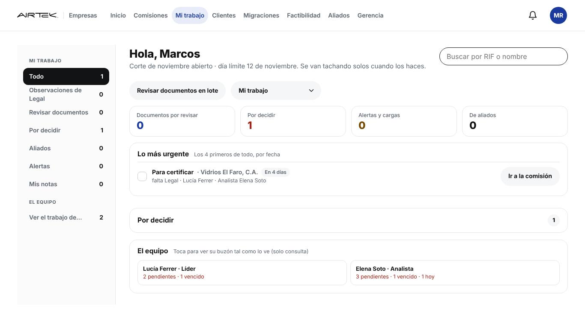
Tu Mi trabajo
Empiezas aquí. Arriba los números (Documentos por revisar, Por decidir, Alertas, Aliados) y el menú de la izquierda con Revisar documentos y Observaciones de Legal.
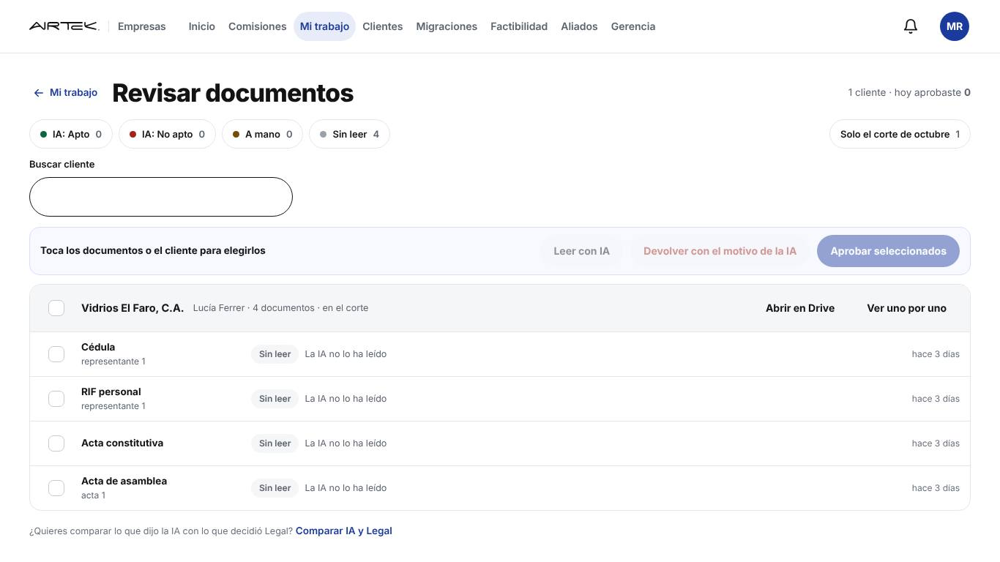
Revisar documentos (en lote)
Lista de clientes con sus documentos por revisar. Arriba filtras por lo que dijo la IA (Apto, No apto, A mano, Sin leer) y "Solo el corte". Eliges documentos con la casilla y decides varios a la vez.
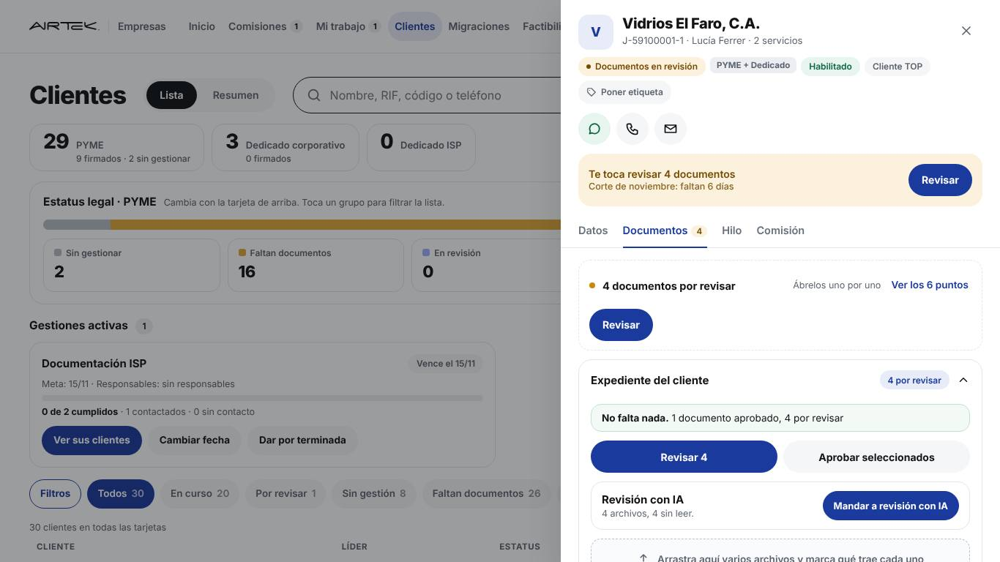
La ficha del cliente, pestaña Documentos
Al abrir el cliente salen cuatro llamados a revisar a la vez: la banda amarilla "Te toca revisar 4 documentos", la línea "4 documentos por revisar", el botón "Revisar 4" y "Ver los 6 puntos". Más abajo, la tarjeta de la IA.

Las casillas del expediente
Cada documento es una casilla con su estado (Bien, Por revisar, Falta) y su botón. Desde cada casilla también puedes revisar ese documento solo.
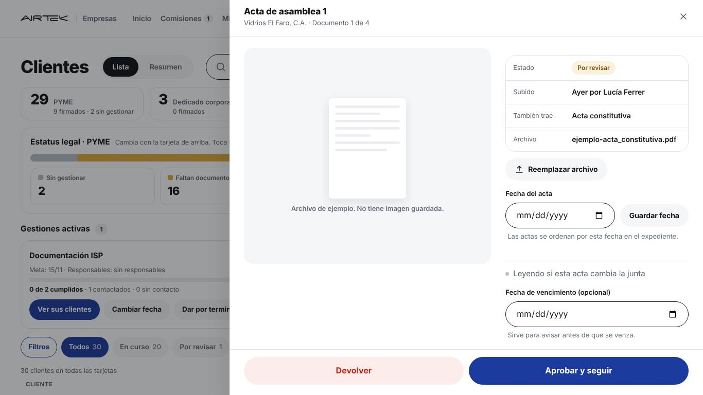
Revisar uno por uno (el visor)
Se abre el documento grande a la izquierda y sus datos a la derecha (estado, quién lo subió, "también trae", fecha del acta, vencimiento). Abajo decides.
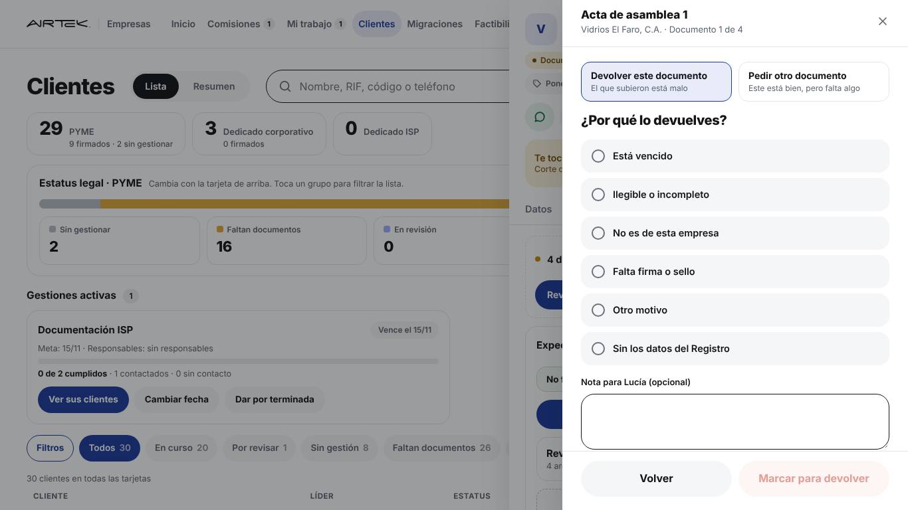
Devolver: por qué
Eliges entre Devolver este documento (está malo) o Pedir otro documento (este está bien, pero falta otro). Luego el motivo y una nota para el líder.
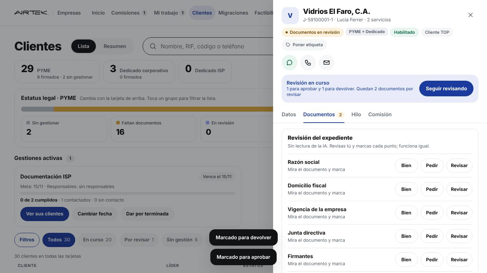
Lo marcado todavía no cuenta
Cada decisión queda "marcada" pero no aplicada. La ficha muestra "Revisión en curso: 1 para aprobar y 1 para devolver" con Seguir revisando. Abajo, el panel de los 6 puntos sigue esperando.
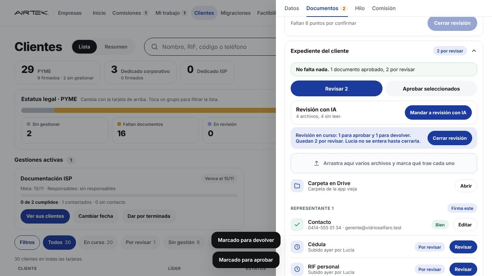
Barra de revisión en curso
"Revisión en curso… Lucía no se entera hasta cerrarla." Con el botón Cerrar revisión. Arriba hay otro Cerrar revisión (el de los 6 puntos), en gris porque faltan puntos.
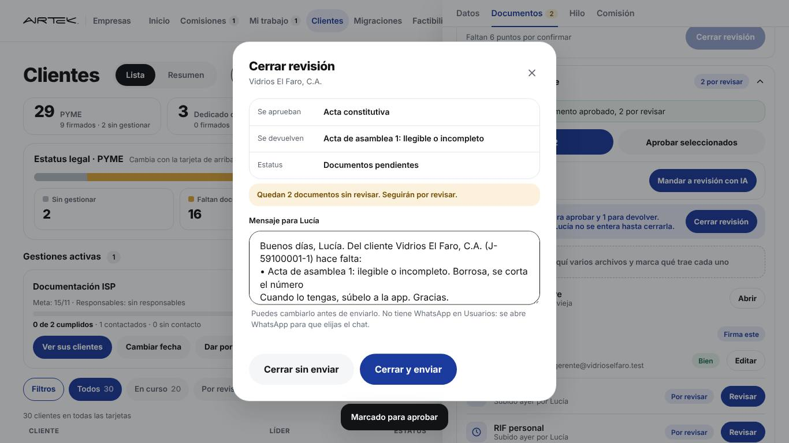
Cerrar revisión (documentos)
Resumen de lo que se aprueba y se devuelve, el estatus que queda y el mensaje para el líder, ya escrito y editable.
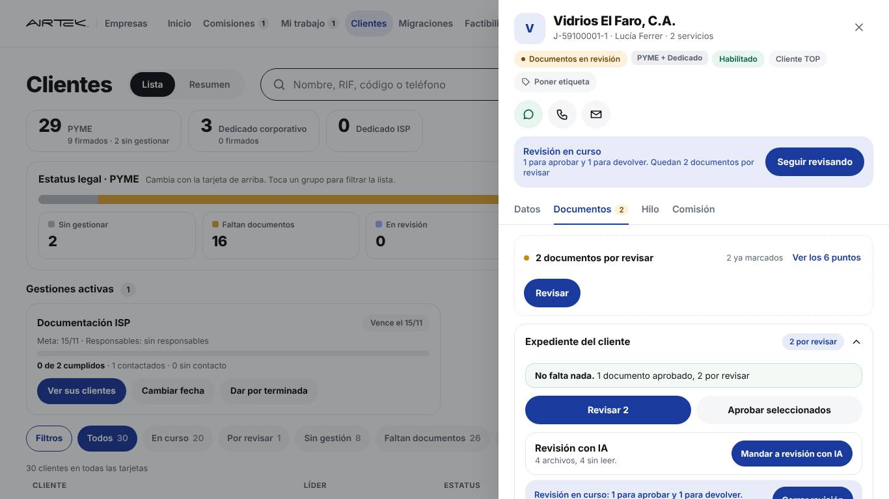
La tarjeta de la IA
La IA no corre sola: tienes que mandarla. La tarjeta dice cuántos archivos hay y cuántos sin leer.
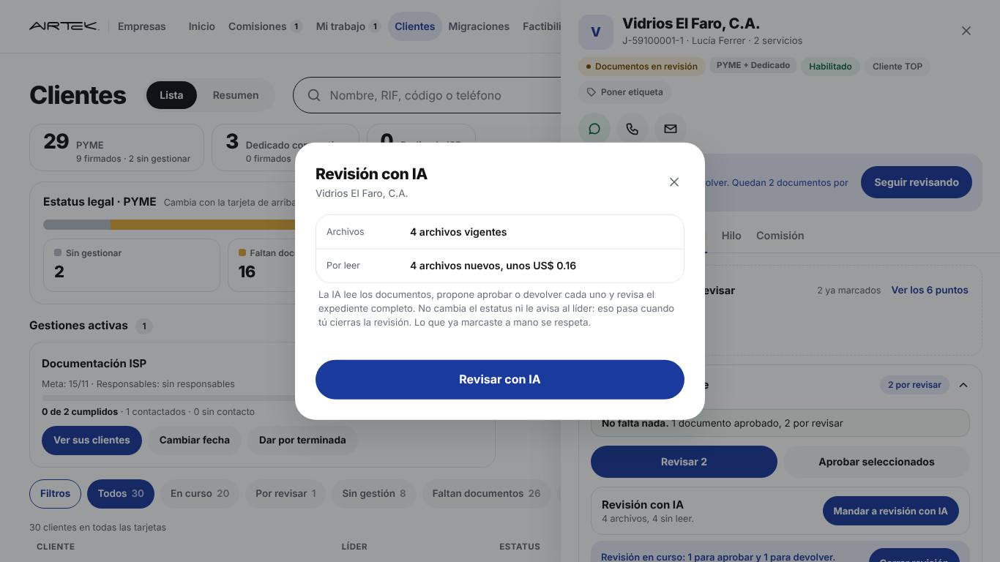
Revisión con IA: confirmar
Te dice cuántos archivos va a leer y cuánto cuesta (unos US$ 0,04 por archivo). Aclara que no cambia el estatus ni avisa al líder.
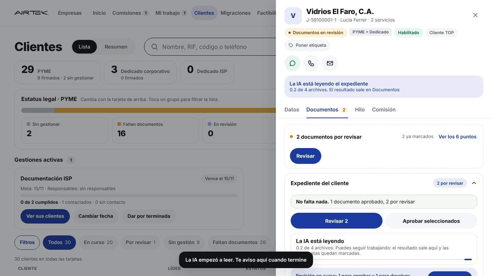
La IA está leyendo
La tarjeta pasa a "La IA está leyendo 0,2 de 4 archivos". Puedes seguir trabajando. Arriba la banda también lo dice.
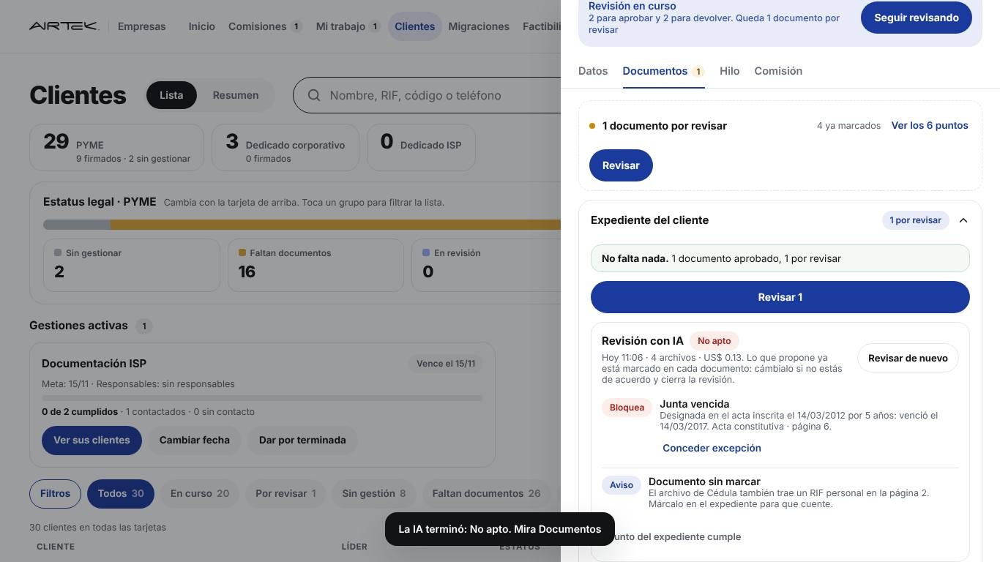
Resultado de la IA
Veredicto (Apto, No apto, A mano), costo y los puntos: lo que bloquea (por ejemplo, junta vencida, con la página del acta), lo que es aviso y lo que cumple. Lo que propone ya queda marcado en cada documento.
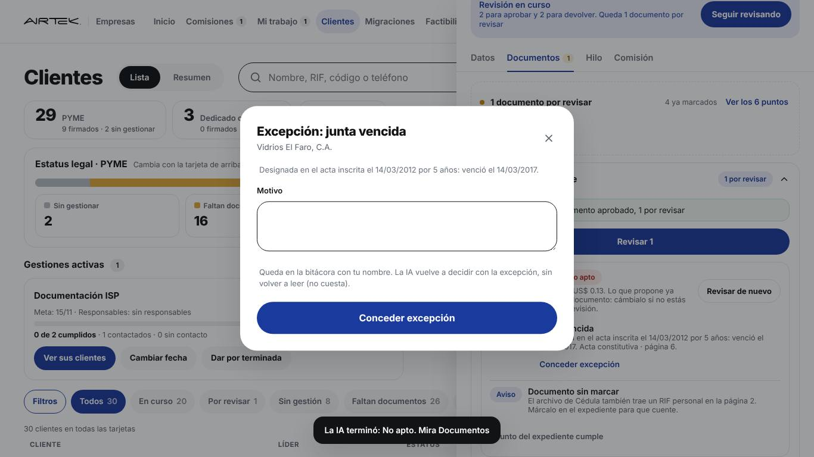
Conceder excepción
Escribes el motivo; queda en la bitácora y la IA vuelve a decidir sin volver a leer.
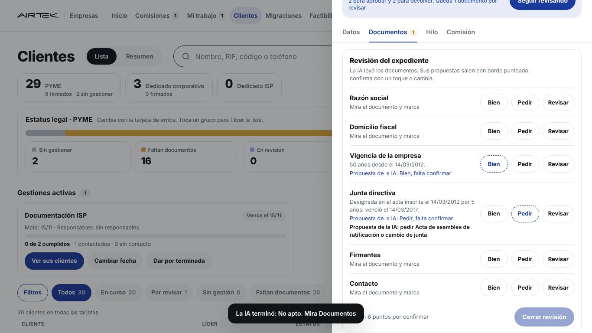
Revisión del expediente: los 6 puntos
Razón social, domicilio fiscal, vigencia de la empresa, junta directiva, firmantes y contacto. Cada uno con Bien / Pedir / Revisar; la propuesta de la IA sale con borde punteado y "falta confirmar".
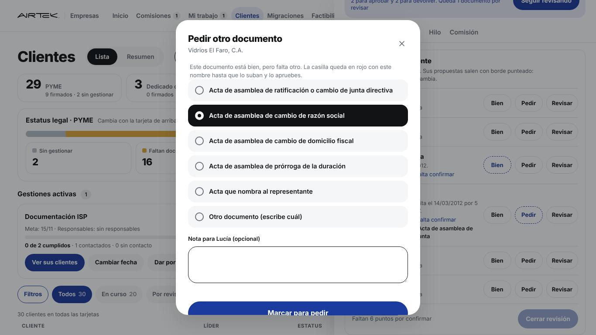
Pedir otro documento
Eliges qué acta falta (ratificación de junta, cambio de razón social, domicilio, prórroga, la que nombra al representante u otro) y una nota para el líder. La casilla queda en rojo con ese nombre.
Hoy no revisa documentos: recibe lo que tú aprobaste y hace el contrato
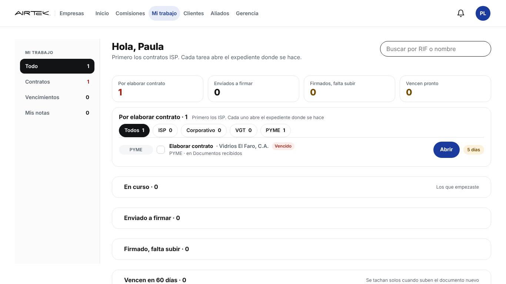
Abogada: su Mi trabajo
Le llegan los clientes ya aprobados por ti (Documentos recibidos): "Por elaborar contrato", con filtros ISP, Corporativo, VGT, PYME. Debajo: En curso, Enviado a firmar, Firmado falta subir, Vencen en 60 días.
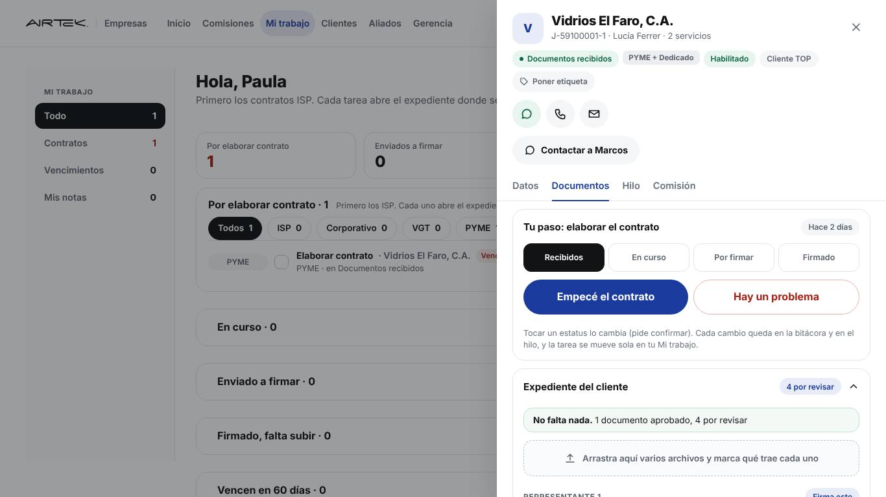
Abogada: "Tu paso" en la ficha
Se abre el cliente en Documentos con los 4 estatus del contrato en botones y el botón del siguiente paso. Ella no revisa ni aprueba documentos: solo los lee.
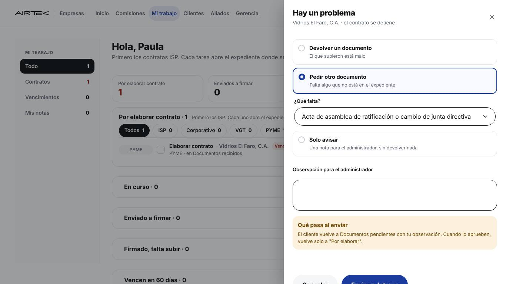
Abogada: Hay un problema
Si al hacer el contrato algo no cuadra: Devolver un documento, Pedir otro documento o Solo avisar, con una observación. El cliente vuelve a Documentos pendientes y te llega a ti en "Observaciones de Legal".
Ocho cosas que encontré al recorrerlo
Para revisar un cliente hay al menos 7 botones: 3 en Mi trabajo, 4 en la ficha ("Revisar" de la banda, "Revisar" de la línea, "Revisar 4", "Aprobar seleccionados") más "Ver uno por uno" del lote.
Los documentos (Aprobar o Devolver) y el expediente (6 puntos) se revisan y se cierran por separado, con dos botones "Cerrar revisión" en la misma pantalla.
Hay que mandarla a mano. Sus propuestas quedan en tres lugares (su tarjeta, cada documento, los 6 puntos) y no en el visor donde decides.
Cuando ves el documento no ves qué dijo la IA de él ni qué puntos del expediente dependen de él (junta, firmantes, domicilio).
"Pedir otro documento" está en el visor, en los 6 puntos y en "Hay un problema" de la abogada, con listas parecidas pero no iguales.
Es seguro, pero si te vas sin cerrar el líder no se entera y el cliente queda en "Revisión en curso" sin que nadie lo vea.
Le sale "4 por revisar" en el expediente aunque no revisa. Y no hay un paso donde ella confirme que los documentos le sirven para el contrato antes de empezarlo.
En "Revisar en lote" puedes aprobar varios sin ver el archivo ni los 6 puntos: rápido, pero salta la revisión del expediente.